Highlighted author(s): Michael Fleischhauer
Authors: Julius Bohm, James Anglin, Michael Fleischhauer
Type: theory · Category: other · PDF: https://arxiv.org/pdf/2605.07708v1
Analysis basis: abstract only; PDF text extraction failed or PDF unavailable
Topic relevance: non-equilibrium dynamics 3/5 · analog quantum simulation 2/5 · quantum measurements 2/5 · spintronics-quantum-optics interface 2/5
Summary. The paper proposes a Thouless pump that operates autonomously using the Larmor precession of a quantum spin instead of external time-dependent driving. It shows that while fermion back-action can disrupt transport, a sufficiently strong magnetic field can recover topological robustness. This suggests a pathway toward creating robust, self-sustaining quantum motors.
Why it may be interesting. It presents a novel mechanism for 'quantum motors' where topological protection and autonomous operation are combined, which is highly relevant to the development of self-driven many-body dynamics and open quantum systems.
Main problem. The paper addresses the challenge of achieving topologically quantized particle transport (Thouless pumping) without the need for time-dependent external control parameters.
Main result. The authors demonstrate that a quantum spin in a static magnetic field can act as an autonomous controller, where Larmor precession drives the pump, and they identify a critical magnetic field strength required to maintain topological robustness against back-action.
Method. The study uses theoretical analysis and numerical evidence to evaluate the dynamics of a coupled fermion-spin system.
Model / system. A one-dimensional lattice of fermions coupled to an additional dynamical degree of freedom, specifically a quantum spin subject to a static magnetic field.
Key observables. Topologically quantized transport of fermions and the stability of the control cycle.
Important parameters / regimes. The strength of the static magnetic field and the back-action of the fermions on the spin.
Assumptions / limitations. The autonomous transport is guaranteed at least in certain higher energy eigenstates of the combined system.
Paper structure. The paper introduces the concept of an autonomous Thouless pump, describes the coupling between fermions and a quantum spin, analyzes the impact of back-action on the transport cycle, and provides numerical evidence for the existence of a robust regime.
Robust quantization of particle transport, as in a Thouless pump, is a hallmark of topological quantum systems with externally controlled system parameters. Here we instead propose and analyze a Thouless pump, for fermions in a one-dimensional lattice, in which external control is not needed, because an additional dynamical degree of freedom allows the pump to work autonomously. The external control parameters are replaced by a quantum spin in a static magnetic field, so that Larmor precession of the spin performs the control cycle that induces topologically quantized transport of the fermions -- at least in some higher energy eigenstates of the combined system. In other states, the back-action of the fermions on the spin can distort the control cycle enough to disrupt the transport, but we find numerical evidence for a critical value of the magnetic field above which the autonomous pump works with topological robustness, suggesting that topological protection and autonomous operation together may permit robust "quantum motors".
Authors: Tobias Wiener, Laurin Brunner, Markus Heyl
Type: theory · Category: statistical mechanics · PDF: https://arxiv.org/pdf/2605.07753v1
Analysis basis: abstract only; PDF text extraction failed or PDF unavailable
Topic relevance: 🔥 non-equilibrium universality 5/5 · 🔥 non-equilibrium dynamics 4/5 · driven-dissipative phase transition 2/5
Summary. The researchers discovered a new type of universal behavior that emerges in Ising models after a sudden symmetry-breaking quench. They found that order-parameter fluctuations follow a predictable scaling pattern governed by a new, previously unknown dynamical critical exponent. This discovery provides a new framework for characterizing universal dynamics in systems far from equilibrium.
Why it may be interesting. It identifies a new universal scaling regime and a new dynamical critical exponent in non-equilibrium phase transitions, which is highly relevant for understanding many-body dynamics and universality classes.
Main problem. The paper seeks to understand universal dynamics in systems far from equilibrium, specifically following a sudden symmetry-breaking quench at continuous phase transitions.
Main result. The authors identify a new form of universal behavior characterized by a previously unknown dynamical critical exponent, evidenced by a temporal collapse of order-parameter fluctuations.
Method. The study utilizes scaling analysis of order-parameter fluctuations across different system sizes and quench strengths in various Ising models.
Model / system. The study focuses on Ising models, specifically the 1D quantum, 2D quantum, 2D classical, 3D classical, and 4D classical Ising models.
Key observables. Order-parameter fluctuations
Important parameters / regimes. System size, quench strength, and dimensionality (effective dimension of the universal regime).
Assumptions / limitations. The scaling behavior is assumed to be driven by a single-variable scaling form related to a new dynamical critical exponent.
Paper structure. The paper introduces the problem of non-equilibrium dynamics, presents the observation of temporal collapse in order-parameter fluctuations, proposes a new dynamical critical exponent, discusses the dimensionality dependence of this regime, and suggests broader applications to systems with non-conserved order parameters.
Uncovering and understanding universal dynamics in matter far from equilibrium remains a key challenge. In this work, we identify a so far unrecognized form of universal behavior that emerges after a sudden symmetry-breaking quench at continuous phase transitions. Our key observation is that the order-parameter fluctuations in Ising models exhibit a compelling temporal collapse across a wide range of system sizes and quench strengths, indicative of an emergent single-variable scaling form. This phenomenon can be explained by introducing a so far unknown dynamical critical exponent for the underlying continuous phase transition. We find evidence for a lower critical effective dimension of this universal regime: it is observed in the 2D quantum and 3D and 4D classical Ising models, but not in the 1D quantum or 2D classical cases. Our results suggest that our observed universal far-from-equilibrium scaling may extend beyond the Ising models studied here and could more broadly characterize systems with non-conserved order parameters, opening new avenues for exploring universal dynamics both theoretically and in current experimental platforms.
Authors: Steven Abel, Andrei Constantin, Luca A. Nutricati
Type: both · Category: quantum information and computing · PDF: https://arxiv.org/pdf/2605.06857v1
Analysis basis: full PDF text, analyzed in chunks
Topic relevance: 🔥 non-equilibrium dynamics 4/5 · QC/QI experiment 3/5 · Rydberg arrays 3/5 · analog quantum simulation 3/5 · correlated / nonlocal dissipation 2/5 · driven-dissipative phase transition 2/5 · entanglement & information structure 2/5 · exotic spin models in light-matter 2/5 · non-equilibrium universality 2/5 · correlated cavity matter 1/5 · methods for driven-dissipative 1/5 · quantum measurements 1/5 · scars & prethermalization 1/5
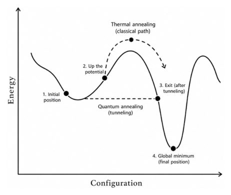
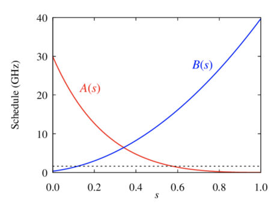
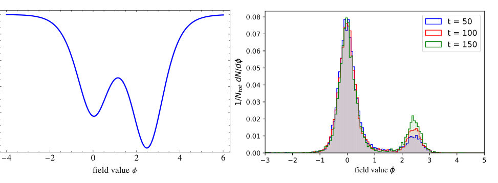
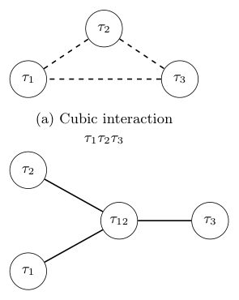
Summary. This review presents quantum annealing as a powerful, near-term computational and physical framework. It details how the technology can be used for both discrete optimization and as a laboratory for exploring many-body quantum dynamics. The paper highlights the importance of hardware connectivity, error-prone regimes, and hybrid algorithmic approaches.
Why it may be interesting. It provides a comprehensive overview of how programmable quantum dynamics can be used to study non-equilibrium phenomena, phase transitions, and the interplay between coherence and dissipation in large-scale many-body systems.
Main problem. Exploring quantum annealing as a versatile framework for solving combinatorial optimization problems, performing stochastic sampling, and studying non-equilibrium many-body quantum dynamics.
Main result. The paper establishes that quantum annealing serves as a dual-natured primitive: a computational tool for navigating rugged energy landscapes via tunneling and a programmable platform for studying complex many-body physics.
Method. The review covers Hamiltonian engineering (including catalysts and quadratization), schedule design (pauses, quenches, and reverse annealing), and hybrid quantum-classical workflows.
Model / system. The primary models are the Ising Hamiltonian and QUBO frameworks, implemented on programmable spin systems such as superconducting flux qubits, trapped ions, and Rydberg-atom arrays.
Key observables. Minimum spectral gap, tunneling rates, energy landscapes, and the distribution of low-energy configurations (bitstrings).
Important parameters / regimes. Annealing schedule (s = t/tau), transverse field strength, coupling strengths (Jij), local fields (hi), and the transition from adiabatic to open-system (noisy/thermal) regimes.
Assumptions / limitations. The framework assumes that optimization problems can be mapped to quadratic forms (via quadratization) and acknowledges that real-world devices operate in non-ideal, dissipative regimes.
Figures summary. Figure 1 compares classical thermal activation to quantum tunneling; Figure 2 illustrates the Maximum Independent Set problem; Figure 3 shows annealing schedule functions A(s) and B(s); Figure 5 demonstrates the reduction of a three-body interaction to a quadratic form.
Paper structure. The paper introduces the principles of quantum annealing, describes hardware platforms and algorithmic techniques (mapping, embedding, and quadratization), analyzes the impact of spectral gaps and noise, and surveys applications in optimization, machine learning, and many-body physics.
Quantum annealing is a computational paradigm in which optimisation problems are mapped onto the energy landscape of an interacting quantum system and explored through its dynamical evolution. By continuously transforming a simple initial Hamiltonian into one whose ground state encodes the solution, the system traverses a complex landscape via a combination of quantum fluctuations, tunnelling processes, and dissipative dynamics. Unlike gate-based quantum computing, quantum annealing is a specialised and near-term approach aimed primarily at discrete optimisation and sampling tasks. While it is not expected to provide polynomial-time solutions to NP-hard problems in the worst case, it offers a physically motivated heuristic for navigating rugged energy landscapes that arise across science and engineering. Modern quantum annealers realise programmable spin systems with thousands of qubits, placing them among the largest controllable quantum devices currently available. As a result, their significance extends beyond optimisation: they also function as experimental platforms for studying non-equilibrium many-body quantum dynamics in regimes that are difficult to access using classical simulation. In this review we present an accessible introduction to the principles of quantum annealing, describe the main hardware platforms and algorithmic techniques, and analyse how tunnelling, spectral gaps, and open-system effects shape computational performance. We survey applications ranging from optimisation and machine learning to quantum simulation and many-body physics, and discuss the central challenges in benchmarking, scaling, and control. These perspectives position quantum annealing as a distinctive framework at the interface of optimisation, stochastic sampling, and programmable quantum dynamics, with a role that is complementary to both classical algorithms and gate-based quantum computing.
Authors: Caisheng Cheng, Ruicheng Bao
Type: theory · Category: statistical mechanics · PDF: https://arxiv.org/pdf/2605.07619v1
Analysis basis: full PDF text, analyzed in chunks
Topic relevance: 🔥 methods for driven-dissipative 4/5 · 🔥 non-equilibrium dynamics 4/5 · driven-dissipative phase transition 2/5 · entanglement & information structure 2/5 · non-equilibrium universality 2/5 · scars & prethermalization 2/5
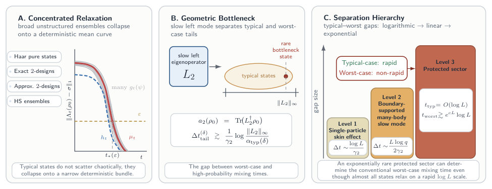
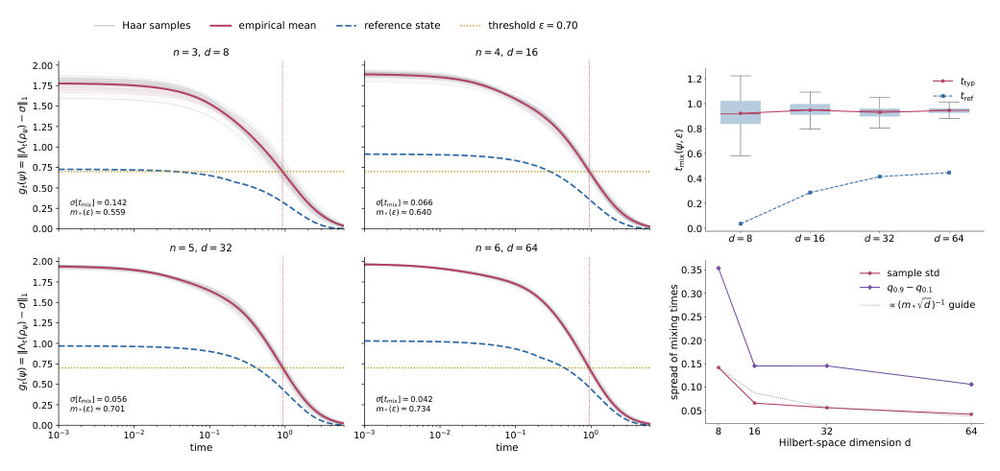
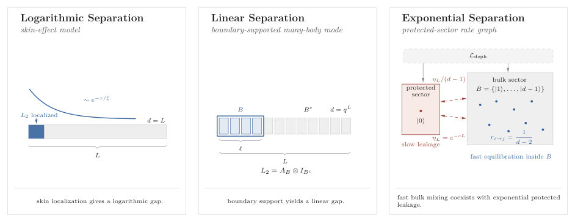
Summary. This paper demonstrates that in open quantum systems, the relaxation of typical initial states is much faster than the worst-case benchmark suggests. It provides a rigorous mathematical framework to show how the gap between typical and worst-case mixing times scales according to the underlying geometry of the system's slow modes.
Why it may be interesting. This is highly relevant for researchers in open quantum systems and many-body dynamics as it provides a new 'initialization-aware' lens for understanding dissipative complexity and shows that the Liouvillian gap alone is insufficient to characterize relaxation.
Main problem. The paper investigates the discrepancy between worst-case mixing times, driven by rare adversarial initial states, and typical mixing times for generic initial states in open quantum systems.
Main result. The authors prove that relaxation curves concentrate around a deterministic mean (vertical concentration) and that this leads to a concentration of mixing times (horizontal concentration). They establish a hierarchy of separation between typical and worst-case scales that can be logarithmic, linear, or exponential depending on the system's geometry.
Method. The study uses probabilistic concentration of measure (Lévy's lemma) on Haar-random ensembles, spectral analysis of the Liouvillian, and quantile-based analysis of trace-distance relaxation curves.
Model / system. The framework applies to general CPTP quantum Markov semigroups with a unique steady state, specifically analyzing skin-effect models, boundary-supported many-body chains, and protected-sector models.
Key observables. Trace-distance relaxation curves g_t(psi), typical mixing time t_typ, worst-case mixing time t_worst, and the Liouvillian spectral gap.
Important parameters / regimes. Hilbert space dimension d, Liouvillian gap gamma, and the overlap of the slow left eigenoperator with initial states.
Assumptions / limitations. The analysis primarily uses Haar-random pure states as a mathematical reference and assumes a single-mode dominance regime for the late-time dynamics.
Figures summary. Figure 1 shows the bundling of relaxation curves around a mean; Figure 3 illustrates the hierarchy of separation (logarithmic, linear, and exponential branches); Figure S8 demonstrates the concentration of mixing time distributions and the scaling of the gap.
Paper structure. The paper begins by defining the paradox of worst-case mixing, introduces the mathematical framework for concentration of relaxation curves, proves theorems for vertical and horizontal concentration, then classifies the hierarchy of separation through specific physical models (skin effect, boundary-supported, and protected sectors), and concludes with extensions to more practical ensembles.
Mixing in open quantum systems is often summarized by a single worst-case time, even though that benchmark can be set by exponentially rare initial states. We show that for broad unstructured ensembles the nonlinear trace-distance relaxation curve itself concentrates around a deterministic mean. For Haar-random pure states this yields fixed-time concentration of the instantaneous trace distance to the steady state, which we term vertical concentration since typical relaxation curves bundle along the distance axis. Whenever the mean curve crosses the distance threshold with a finite slope, it converts this vertical concentration into a horizontal concentration of the mixing time, extending typicality from standard physical observables to a fundamentally non-observable dynamical quantity. This sharp concentration naturally raises the question of how the typical mixing timescale compares to the worst-case benchmark. We show that in a one-mode tail regime, this separation is controlled by the logarithmic ratio of extremal to typical initial-state overlaps for the slow left eigenoperator. This rare-state bottleneck law yields a hierarchy that is logarithmic in skin-effect settings, linear for boundary-supported many-body slow modes, and exponential in a protected-sector family where generic states mix rapidly while rare states stagnate. The framework also extends beyond Haar to exact and approximate unitary 2-designs and Hilbert-Schmidt/induced ensembles.
Authors: Moritz Fontboté-Schmidt, Jeremy Metzner, Florence Berterottière, Ivan Rojkov, Alexander Ferk, Alexander Ferk, Martin Stadler, Bahadir Dönmez, Ralf Berner, Stephan Welte, Daniel Kienzler, Jonathan P. Home
Type: experiment · Category: quantum information and computing · PDF: https://arxiv.org/pdf/2605.08009v1
Analysis basis: abstract only; PDF text extraction failed or PDF unavailable
Topic relevance: 🔥 QC/QI experiment 4/5 · quantum optics experiment 3/5 · correlated / nonlocal dissipation 2/5 · entanglement & information structure 2/5 · interference shaping light 1/5 · quantum measurements 1/5
Summary. The study demonstrates the generation of entangled GKP qubit states using a beamsplitter-like interaction between motional modes of a trapped ion. By achieving 69% average fidelity for Bell states and implementing error correction, the researchers complete the necessary Gaussian operations for GKP-based quantum computing. This provides a pathway toward more robust, multi-mode bosonic encodings.
Why it may be interesting. This work is highly relevant for quantum optics and open quantum systems as it demonstrates the practical implementation of Gaussian operations and error correction protocols essential for scalable bosonic quantum computing.
Main problem. The challenge of implementing fault-tolerant gates and error correction for GKP codes using hardware-efficient bosonic interactions.
Main result. Demonstration of generating all four Bell states of GKP qubits with an average fidelity of 69% and the extension of entangled state lifetime via quantum error correction.
Method. The researchers use a beamsplitter-like coupling to interfere two 'qunaught' states (grid-structured states without logical information) to create entangled GKP qubits.
Model / system. The experimental platform consists of two motional modes of a trapped ion system.
Key observables. Fidelity of the generated Bell states and the lifetime of the entangled states under error correction.
Important parameters / regimes. Average fidelity of 69% for Bell state generation.
Paper structure. The paper introduces the motivation for GKP codes, describes the experimental implementation using trapped ion motional modes, presents the generation of Bell states, and demonstrates the efficacy of error correction.
To be useful, quantum computers will be required to successfully correct errors occurring at the hardware level. Bosonic codes provide a hardware-efficient option for error correction, but fault-tolerance further requires that the available gate interactions be compatible with the code. A promising bosonic code is the Gottesman-Kitaev-Preskill (GKP) code, for which a linear beamsplitter-like coupling between two bosonic modes is fault-tolerant, making this a key primitive for building larger systems. Here, using two motional modes of a trapped ion, we demonstrate the generation of entangled states of GKP qubits by interfering two qunaught states, which have a grid structure but carry no logical information, on a beamsplitter. We generate all four Bell states with an average fidelity of 69%, and subsequently demonstrate an extension of the entangled state lifetime through the use of quantum error correction. These results complete the set of Gaussian operations required for quantum computing with GKP codes and enable explorations of multi-mode bosonic encodings as well as fundamental tests of information channels.
Authors: Pavel Orlov, Rustem Sharipov, Enej Ilievski
Type: theory · Category: statistical mechanics · PDF: https://arxiv.org/pdf/2605.08079v1
Analysis basis: full PDF text, analyzed in chunks
Topic relevance: 🔥 non-equilibrium dynamics 4/5 · entanglement & information structure 3/5 · non-equilibrium universality 3/5 · scars & prethermalization 3/5
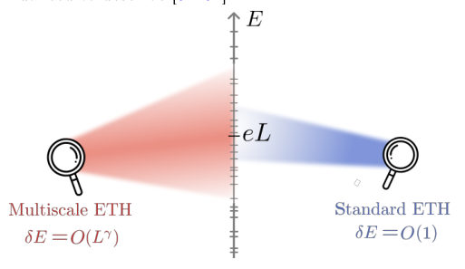
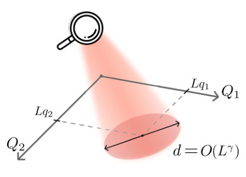
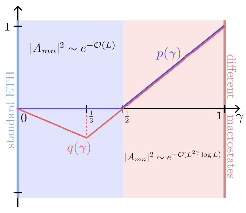
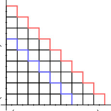
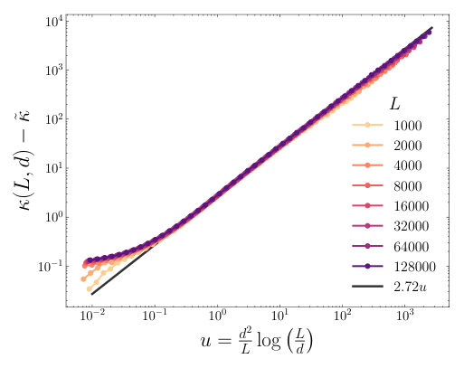
Summary. The paper reveals that the statistical properties of matrix elements in the Eigenstate Thermalization Hypothesis are not universal but depend on the scale of energy and charge fluctuations. By studying an integrable bosonic field theory, the authors identify a multiscale structure characterized by non-analytic transitions in scaling exponents and probability distributions.
Why it may be interesting. It provides a deep understanding of how thermalization and the statistical properties of many-body eigenstates are shaped by the scale of fluctuations, which is fundamental to many-body dynamics and the study of integrable vs. chaotic systems.
Main problem. Investigating how the statistical properties of off-diagonal matrix elements in the Eigenstate Thermalization Hypothesis (ETH) depend on the fluctuation scale of conserved charges.
Main result. Discovery of a multiscale structure in ETH where scaling exponents and probability distributions (Gumbel vs. Skew-Normal) undergo non-analytic transitions at critical fluctuation scales.
Method. Analytical derivation using the quantum Benjamin-Ono hierarchy and combinatorial analysis of Young diagrams, combined with efficient numerical sampling of modified Vershik ensembles.
Model / system. An integrable 1+1 dimensional quantum field theory of a massless bosonic field (specifically a c=1 Conformal Field Theory) featuring an infinite hierarchy of local conserved charges.
Key observables. Off-diagonal matrix elements of local observables, suppression rate (kappa), and distribution width (delta kappa).
Important parameters / regimes. Fluctuation-scale parameter (gamma), system size (L), and the scaling variable (u).
Assumptions / limitations. The study relies on the specific integrability of the Benjamin-Ono/massless boson model to allow for exact combinatorial computations.
Figures summary. Figures illustrate the probing of multiscale structure, the distance between eigenstates in charge space, the non-analytic dependence of scaling exponents on gamma, and the scaling collapse of distribution widths.
Paper structure. The paper introduces the multiscale ETH problem, defines the integrable model and the fluctuation-scale parameter gamma, presents analytical results for scaling exponents and distribution crossovers, and validates these findings through large-scale numerical sampling.
The eigenstate thermalization hypothesis provides a framework for understanding thermalization in isolated quantum many-body systems by characterizing statistical properties of local observables in energy eigenstates. Here we demonstrate that distributions of matrix elements in macroscopic systems may depend not only on the macrostate parameters, such as the densities of local conserved charges, but generally also on the properties of ensembles used in sampling eigenstates. To this end, we depart from the conventional analysis of microcanonical windows and consider statistical ensembles with an adjustable scale parameter prescribing the magnitude of charge fluctuations. We specifically consider an integrable field theory that permits efficient numerical sampling of matrix elements and reliable extrapolation to the thermodynamic limit. Moreover, in this system, we identify a class of states that enables explicit closed-form computation of the suppression rate of matrix elements. Our findings reveal an underlying multiscale structure of matrix elements captured by a non-analytic fluctuation-scale dependence of algebraic exponents governing their statistical properties.
Authors: Nina H. Amini, Sofiane Chalal
Type: theory · Category: statistical mechanics · PDF: https://arxiv.org/pdf/2605.06973v1
Analysis basis: full PDF text, analyzed in chunks
Topic relevance: 🔥 methods for driven-dissipative 4/5 · non-equilibrium dynamics 3/5 · correlated / nonlocal dissipation 2/5 · driven-dissipative phase transition 2/5 · entanglement & information structure 2/5
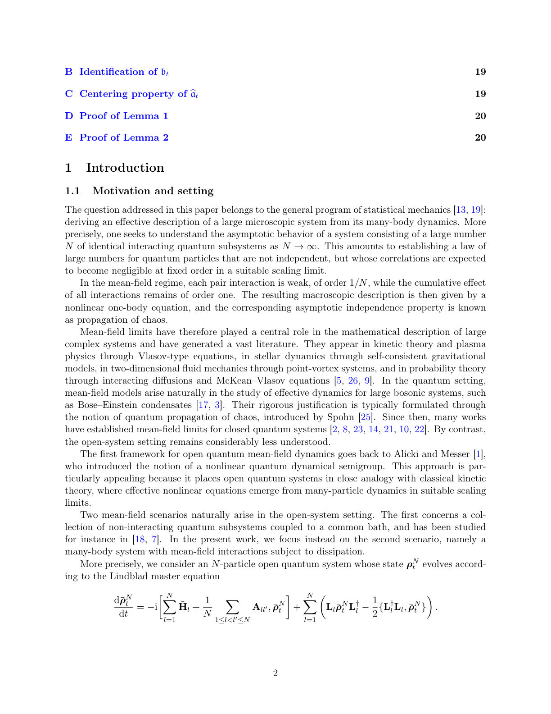
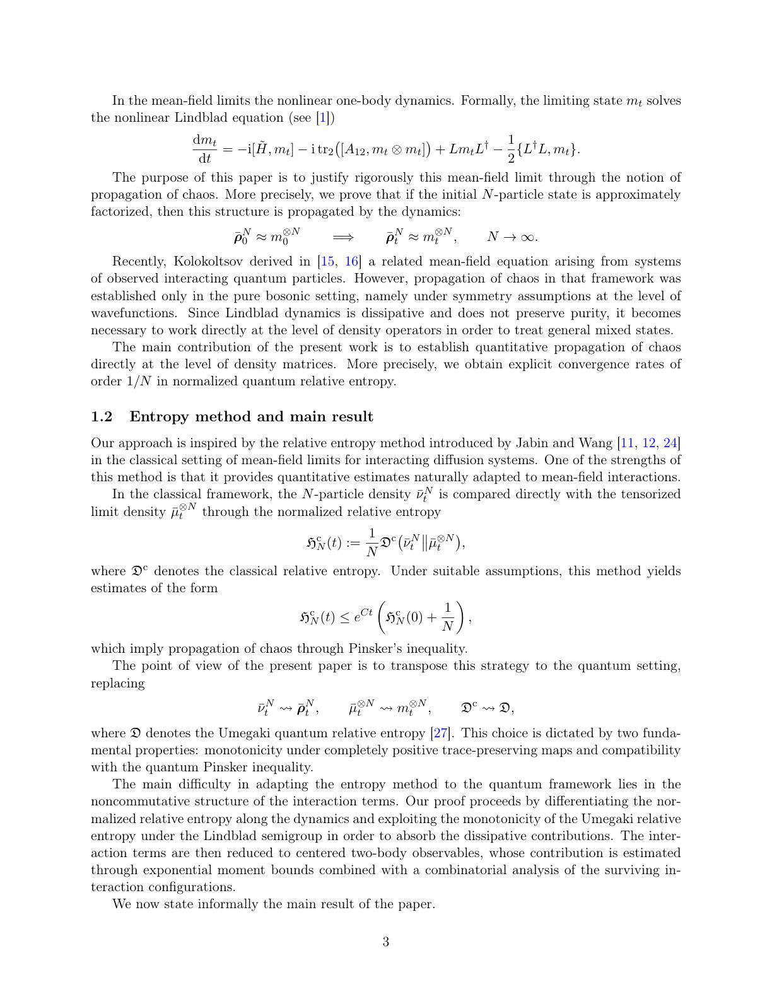
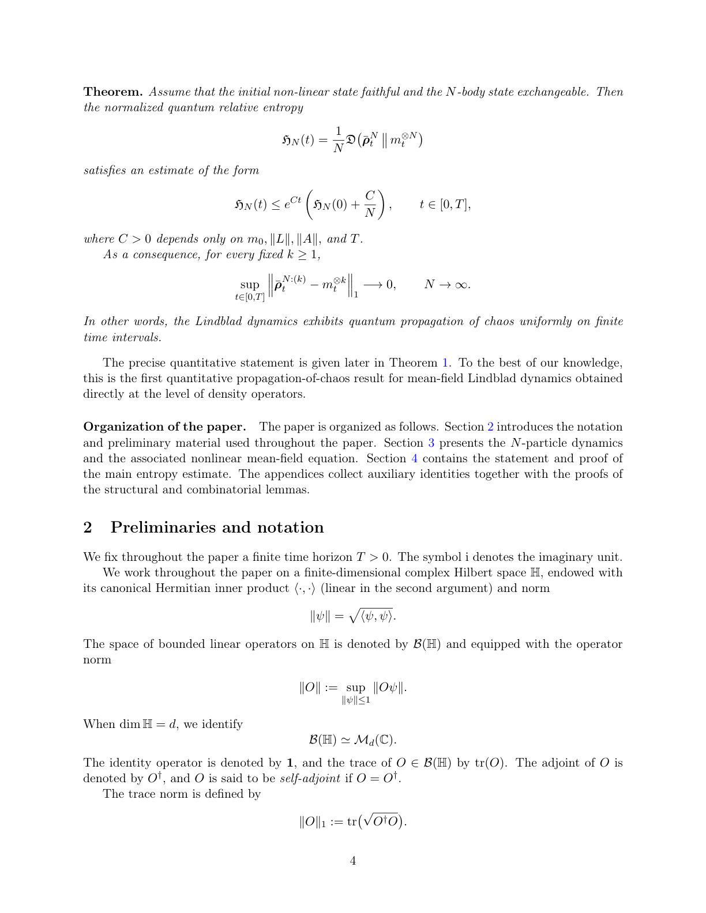
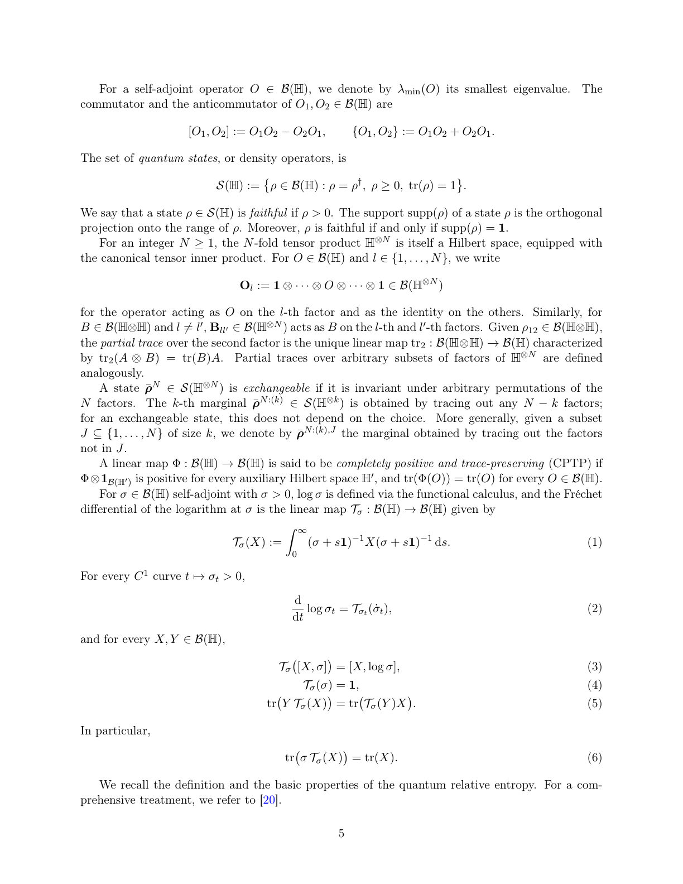
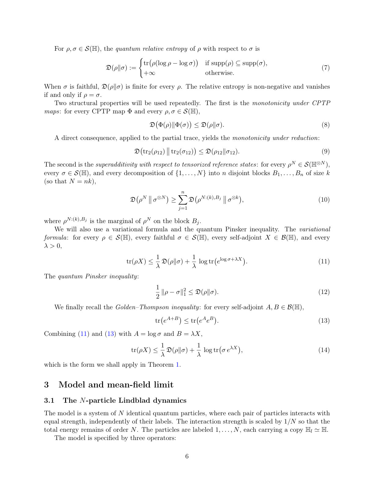
Summary. This paper provides the first quantitative proof of the propagation of chaos for mean-field Lindblad dynamics. It demonstrates that the error between an N-body system and its nonlinear mean-field limit vanishes at a rate of 1/N in terms of quantum relative entropy. This result is significant for the mathematical description of large-scale open quantum systems.
Why it may be interesting. This provides a rigorous, quantitative foundation for the mean-field approximation in open many-body systems, which is crucial for understanding the stability of large-scale quantum dynamics under dissipation.
Main problem. Establishing a quantitative propagation of chaos for open quantum systems, specifically proving that N-body Lindblad dynamics converge to a nonlinear mean-field limit with an explicit convergence rate.
Main result. The authors prove that the normalized quantum relative entropy between the N-particle state and the product mean-field state is bounded by O(1/N), providing a quantitative rate for the convergence of k-particle marginals.
Method. The study employs the Umegaki quantum relative entropy method, utilizing tools such as the quantum Pinsker inequality, Grönwall's lemma, and combinatorial analysis of interaction configurations to track the divergence of the N-body system.
Model / system. An N-body open quantum system governed by a Lindblad master equation featuring a single-particle Hamiltonian, a weak two-body interaction scaled by 1/N, and local Lindblad jump operators.
Key observables. Normalized quantum relative entropy H_N(t) and k-particle marginals.
Important parameters / regimes. The large N limit (mean-field regime), finite time horizon T, and the norm of the Lindblad operators.
Assumptions / limitations. The initial N-particle state must be exchangeable and the limiting mean-field state must be faithful (positive and invertible).
Paper structure. The paper introduces the mean-field Lindblad problem, establishes the quantitative entropy estimate using the relative entropy method, proves the convergence of marginals, and provides technical appendices on the faithfulness of the density matrix and combinatorial bounds.
We consider an open quantum system governed $N$-body Lindblad equation and study mean-field limits in this setting. We prove that the $N$-particle dynamics converges, in the sense of quantum relative entropy, to the tensorized solution of the limiting nonlinear equation. More precisely, we establish explicit bounds of order $1/N$ on the relative entropy between the $N$-particle density operator and the corresponding product state, thereby providing a quantitative propagation of chaos.
Authors: Juha Torvinen, Esko Keski-Vakkuri, Nicola Pranzini
Type: theory · Category: quantum information and computing · PDF: https://arxiv.org/pdf/2605.06848v1
Analysis basis: abstract only; PDF text extraction failed or PDF unavailable
Topic relevance: 🔥 entanglement & information structure 4/5 · quantum measurements 3/5 · correlated / nonlocal dissipation 2/5 · methods for driven-dissipative 2/5 · non-equilibrium dynamics 2/5
Summary. The paper explores how information about a system can be recovered from parts of its environment using the Petz recovery map. It finds that as the size of the observed environmental fragment grows, the fidelity of the reconstructed state stabilizes at a plateau. This provides a formal protocol for the information redundancy predicted by Quantum Darwinism.
Why it may be interesting. This is highly relevant for researchers in open quantum systems and quantum information as it provides a concrete mathematical protocol (Petz map) for the information retrieval process central to the theory of decoherence and Quantum Darwinism.
Main problem. The paper investigates whether the einselected state of a system can be reconstructed from environmental fragments using the Petz recovery map, addressing the lack of a specified reconstruction protocol in Quantum Darwinism.
Main result. The authors demonstrate that the fidelity between the initial system state and the state reconstructed via the Petz map reaches a plateau as the size of the environmental fragment increases.
Method. The study employs analytical arguments and numerical simulations of large, tractable models to evaluate the effectiveness of the Petz recovery map.
Model / system. A system Gamma interacting with a multipartite environment Xi, where the environment is divided into independent subsets called fragments.
Key observables. Fidelity between the initial system state and the reconstructed state.
Important parameters / regimes. Fragment size of the environment.
Assumptions / limitations. The environment is multipartite and consists of independent fragments that encode system information redundantly.
Paper structure. The paper introduces the problem of reconstruction in Quantum Darwinism, applies the Petz recovery map to environmental fragments, and presents analytical and numerical evidence of fidelity plateaus.
According to Quantum Darwinism, system-environment interactions both einselect particular system properties and encode them redundantly in many independent subsets of the environment, called fragments. This redundancy implies that an observer can recover the einselected information by accessing just one such fragment. However, the protocol by which such reconstruction should occur is often left unspecified. Considering a system $Γ$ interacting with a multipartite environment $Ξ$, we investigate whether, and under what conditions, the einselected state of $Γ$ can be recovered from environmental fragments using the Petz recovery map. We show that the fidelity between the system's initial state and the state reconstructed via Petz recovery develops a plateau as a function of the fragment size. Our results are supported by both analytical arguments and numerical simulations of large but tractable models.
Authors: Shuo Zhang, Yuzhi Tong, Pengfei Zhang, Zeyu Liu
Type: theory · Category: quantum information and computing · PDF: https://arxiv.org/pdf/2605.07668v1
Analysis basis: abstract only; PDF text extraction failed or PDF unavailable
Topic relevance: 🔥 analog quantum simulation 4/5 · Rydberg arrays 3/5 · entanglement & information structure 3/5 · non-equilibrium dynamics 2/5
Summary. This paper introduces 'generalized Krylov complexity' as a new metric to measure how difficult it is to implement specific quantum gates in analog quantum simulators. By analyzing the growth of operator space through nested commutators, the authors show that this complexity can accurately predict the minimum time needed to perform a target operation. This provides a powerful new tool for designing efficient control protocols in platforms like Rydberg atom arrays.
Why it may be interesting. It provides a new theoretical bridge between operator growth dynamics (Krylov complexity) and the practical control engineering of analog quantum simulators, offering a way to optimize quantum protocols.
Main problem. The lack of a quantitative measure to determine the complexity and minimum time required to implement specific quantum operations in analog quantum simulators with global control fields.
Main result. The introduction of generalized Krylov complexity as a predictive tool that quantifies the synthesis complexity of quantum operations and predicts the minimum time needed for their realization.
Method. The authors construct a block Krylov basis generated by a set of Hamiltonians to organize the achievable operator space through nested commutators and analyze its relationship to implementation time.
Model / system. The study focuses on analog quantum simulators with global control fields, specifically using Rydberg atom arrays as a representative system.
Key observables. Generalized Krylov complexity and the minimum time required for target operation realization.
Important parameters / regimes. The set of native Hamiltonians and their nested commutators within the simulator.
Paper structure. The paper introduces the problem of synthesis complexity, proposes the generalized Krylov complexity framework, demonstrates its application using block Krylov bases, and validates its predictive power using Rydberg atom arrays.
Quantum simulation of complex many-body systems beyond classical computational capabilities provides a promising route toward understanding novel quantum phases and their transitions. In particular, analog quantum simulators with global control fields have attracted considerable attention due to their potential to simulate arbitrary Hamiltonians and perform quantum computing tasks. However, a clear, quantitative measure for the complexity of implementing specific quantum operations in such systems is still lacking. In this Letter, we address this challenge by introducing generalized Krylov complexity, a concept originating from operator growth dynamics, as a direct diagnosis for this synthesis complexity. We construct the block Krylov basis generated by a set of Hamiltonians, which naturally organizes the operator space achievable through the simulator's native interactions and their nested commutators. By analyzing representative systems including Rydberg atom arrays, we demonstrate that the generalized Krylov complexity of a target operation serves as a strong predictor of the minimum time required for its realization. Our results establish Krylov complexity as an intuitive and predictive tool for designing efficient control protocols in analog quantum simulators.
Authors: Jakob Wagner, Jeff Maki, Oded Zilberberg, Kilian Seibold
Type: theory · Category: statistical mechanics · PDF: https://arxiv.org/pdf/2605.08021v1
Analysis basis: abstract only; PDF text extraction failed or PDF unavailable
Topic relevance: 🔥 methods for driven-dissipative 4/5 · driven-dissipative phase transition 3/5 · non-equilibrium dynamics 3/5 · correlated / nonlocal dissipation 2/5
Summary. The authors derive a new master equation for driven nonlinear quantum oscillators that accounts for the way driving and nonlinearity modify dissipation. This approach reveals that dissipation becomes 'dressed' by the system's dynamics, leading to phenomena like nonlinear damping and the suppression of bistability. This is significant for accurately modeling the dynamics of nonlinear quantum platforms used in quantum technologies.
Why it may be interesting. It provides a new microscopic framework for understanding how the dissipative sector of an open quantum system is reshaped by its own nonlinear and driven dynamics, which is crucial for high-precision quantum technologies.
Main problem. Standard master equations (Lindblad/Caldeira-Leggett) fail to account for how driving and nonlinearities modify the dissipative dynamics of quantum oscillators.
Main result. The derivation of a generalized Caldeira-Leggett master equation shows that nonlinearities and driving 'dress' the dissipator, leading to nonlinear damping and asymmetric resonance responses.
Method. Microscopic derivation of a generalized master equation by retaining full nonlinear and time-dependent system dynamics during the construction of the dissipator.
Model / system. Driven nonlinear quantum oscillators, specifically including the driven Kerr oscillator with position- and momentum-dependent system-bath coupling.
Key observables. Phase-space fluctuations, resonance response, bistability, and fluctuation distributions.
Important parameters / regimes. Nonlinear coupling strengths, driving amplitude, and system-bath coupling dependence on position and momentum.
Assumptions / limitations. The derivation moves beyond the standard assumptions that exclude nonlinearities and driving from the dissipative construction.
Paper structure. The paper introduces the limitation of standard master equations, presents the derivation of the generalized Caldeira-Leggett equation, applies it to the driven Kerr oscillator, and discusses the resulting physical consequences like suppressed bistability.
Driven nonlinear quantum oscillators are a central platform for quantum technologies, yet their dissipative dynamics are typically described using Lindblad or Caldeira-Leggett master equations derived under assumptions that exclude nonlinearities and driving. Here, we derive a generalized Caldeira-Leggett master equation for driven nonlinear oscillators by retaining the full nonlinear and time-dependent system dynamics in the construction of the dissipator. For position- and momentum-dependent system-bath coupling, the dissipator itself becomes dynamically dressed, generating nonlinear and drive-dependent dissipative channels beyond conventional fixed-dissipator approaches. This produces nonlinear damping together with dissipation-induced corrections to the effective drive. The resulting dissipative dynamics suppress large-amplitude excitations and reduce phase-space fluctuations. For a driven Kerr oscillator, this leads to the suppression of bistability, asymmetric resonance responses, and strongly modified fluctuation distributions. More broadly, our results establish a microscopic framework in which nonlinear dynamics and driving directly reshape the dissipative sector of driven open quantum systems.
Authors: M. Olney-Fraser, J. Fuhrmann, S. Dietel, L. Kazak, F. Jelezko
Type: both · Category: quantum information and computing · PDF: https://arxiv.org/pdf/2605.07891v1
Analysis basis: abstract only; PDF text extraction failed or PDF unavailable
Topic relevance: 🔥 QC/QI experiment 4/5 · quantum optics experiment 3/5 · spintronics-quantum-optics interface 3/5 · non-equilibrium dynamics 2/5
Summary. The paper identifies phonon-assisted anti-Stokes excitation as the cause of unwanted charge cycling in NV centres in diamond. By developing new quantitative models, the authors show how specific acoustic and high-energy phonon modes contribute to these sub-resonant transitions. This work is crucial for improving the initialization and stability of NV-based quantum sensors.
Why it may be interesting. This is highly relevant for quantum optics and open quantum systems as it provides a detailed mechanism for how environmental degrees of freedom (phonons) drive non-adiabatic transitions in a solid-state qubit platform.
Main problem. Sub-resonant charge transitions from NV0 to NV- during excitation limit the effectiveness of initialization protocols for NV-based quantum sensing.
Main result. The study demonstrates that sub-resonant charge cycling is driven by phonon-assisted anti-Stokes excitation and identifies specific phonon modes, including low-energy acoustic phonons and a 43 meV mode, that drive these transitions.
Method. The authors develop novel quantitative models to analyze the contribution of different phonon states to the anti-Stokes transition.
Model / system. The physical system is the nitrogen-vacancy (NV) centre in diamond, specifically focusing on the charge state dynamics between NV0 and NV- under sub-resonant optical excitation.
Key observables. NV charge state transitions and charge cycling dynamics.
Important parameters / regimes. Photon energies below the Zero Phonon Line (ZPL), low energy acoustic phonons, and a 43 meV phonon mode.
Paper structure. The paper introduces the problem of charge-state instability in NV centres, presents quantitative models for phonon-assisted anti-Stokes excitation, and analyzes the specific roles of different phonon modes in the transition dynamics.
The nitrogen-vacancy (NV) centre in diamond is a leading platform for room-temperature quantum sensing. Improvements in sensitivity require precise control of the NV charge state. Transitions from the neutral NV$^0$ charge state to the negative NV$^-$ charge state can occur during excitation with photon energies below the ZPL transition of NV$^0$. These sub-resonant charge transitions limit modern initialisation protocols and have not been studied in full detail. In this paper we show that sub-resonant charge cycling arises from phonon-assisted anti-Stokes excitation. We further uncover the phonon states which contribute most strongly to the anti-Stokes transition via the development of novel quantitative models. The models indicate that low energy acoustic phonons strongly contribute to the transition close to the ZPL. At longer wavelengths a 43\,meV mode additionally impacts the charge cycling dynamics.
Authors: Saikat Banerjee, Tara Steinhöfel, Florian Lange, Matthias Eschrig, Holger Fehske
Type: theory · Category: strongly correlated electrons · PDF: https://arxiv.org/pdf/2605.08049v1
Analysis basis: abstract only; PDF text extraction failed or PDF unavailable
Topic relevance: 🔥 non-equilibrium dynamics 4/5 · exotic spin models in light-matter 3/5 · driven-dissipative phase transition 2/5 · spintronics-quantum-optics interface 2/5
Summary. This paper shows how circularly polarized light can be used to control and detect hidden multipolar orders in Mott insulators. By driving the system, the authors find that one can induce an effective magnetic field and new exchange interactions, allowing for the optical tuning of complex quantum phases. The study also predicts that these light-induced orders can be detected through measurable changes in the crystal lattice.
Why it may be interesting. The work demonstrates a mechanism for using light to manipulate many-body quantum states and create non-equilibrium phases (like a Kitaev-like multipolar liquid) that are inaccessible in equilibrium.
Main problem. The control and detection of hidden multipolar orders in spin-orbit-coupled Mott insulators are major experimental challenges.
Main result. The authors demonstrate that circularly polarized light can induce an octupolar inverse Faraday effect and a new bond-dependent anisotropic exchange, enabling the optical tuning of various multipolar phases and providing structural fingerprints via lattice distortions.
Method. A Floquet Schrieffer-Wolff expansion is applied to a driven Hubbard-Kanamori model to derive a low-energy multipolar Hamiltonian.
Model / system. A driven Hubbard-Kanamori model representing 4d2/5d2 systems with edge-sharing octahedra.
Key observables. Magnetic octupole moment, bond-dependent anisotropic exchange, and reversible trigonal and tetragonal lattice distortions.
Important parameters / regimes. Circularly polarized light driving, multipolar exchange landscape, and the interplay between the induced effective static field and anisotropic exchange.
Assumptions / limitations. The derivation relies on the Floquet Schrieffer-Wolfer expansion, which typically assumes high-frequency driving.
Paper structure. The paper introduces the problem of hidden multipolar order, presents the Floquet-derived Hamiltonian, describes the resulting light-driven terms (octupolar inverse Faraday effect and anisotropic exchange), analyzes the resulting nonequilibrium phase space, and concludes with the predicted structural fingerprints in pump-probe experiments.
Hidden multipolar orders in spin-orbit-coupled Mott insulators provide a promising setting for correlated quantum matter, yet their control and detection remain major challenges. Here, we demonstrate that circularly polarized light enables both in $4d^2/5d^2$ systems with edge-sharing octahedra. Using a Floquet Schrieffer-Wolff expansion of a driven Hubbard-Kanamori model, we derive a low-energy multipolar Hamiltonian with two qualitatively new light-driven terms. One is an effective static field that couples linearly to the magnetic octupole, realizing an octupolar inverse Faraday effect. The other is a bond-dependent anisotropic exchange interaction absent in equilibrium. These two couplings are the key result of this work: the first provides a direct optical handle on hidden octupolar order, while the second reorganizes the multipolar exchange landscape and opens an enlarged Kitaev-like multipolar liquid regime. Their interplay produces a nonequilibrium multipolar phase space inaccessible in equilibrium, enabling optical tuning among antiferro-octupolar, ferro-octupolar, partially polarized ferro-quadrupolar, Ising octupolar, and multipolar liquid phases. We further show that the induced multipolar order couples to the lattice, generating reversible trigonal and tetragonal distortions that provide structural fingerprints in pump-probe experiments. Our work establishes a general mechanism for the optical generation, control, and detection of hidden multipolar quantum states.
Authors: Federico Settimo, Jyrki Piilo
Type: theory · Category: numerical methods · PDF: https://arxiv.org/pdf/2605.07797v1
Analysis basis: abstract only; PDF text extraction failed or PDF unavailable
Topic relevance: 🔥 methods for driven-dissipative 4/5 · quantum measurements 3/5 · correlated / nonlocal dissipation 2/5 · non-equilibrium dynamics 2/5
Summary. This paper reviews the various quantum jump unraveling techniques used to represent non-Markovian open system dynamics as pure state trajectories. It compares different methods based on their computational efficiency and physical interpretation. This is important for researchers dealing with complex environments where the Markov approximation fails.
Why it may be interesting. It provides a much-needed synthesis of computational tools for simulating open systems where memory effects and non-Markovianity are present, which is critical for modern quantum technologies.
Main problem. The lack of a comprehensive review of various quantum jump unraveling techniques specifically designed for non-Markovian open quantum system dynamics.
Main result. A detailed overview and comparative analysis of widely used non-Markovian quantum jump methods, evaluated based on numerical efficiency, divisibility requirements, and measurement interpretation.
Method. A review of stochastic unraveling techniques that generalize the Markovian Lindblad approach to scenarios with temporal correlations and negative decay rates.
Model / system. Open quantum systems exhibiting non-Markovian dynamics, characterized by temporal correlations and non-Lindbladian master equations.
Important parameters / regimes. decay rates (specifically temporarily negative rates), divisibility of the dynamics, and Hilbert space extension.
Assumptions / limitations. The review focuses on dynamics that deviate from the Markov approximation due to temporal correlations.
Paper structure. The paper provides an introduction to stochastic unravelings, reviews various non-Markovian jump methods, and discusses them through the lenses of numerical efficiency, divisibility, and measurement interpretation.
Stochastic unravelings provide a useful way to represent open quantum system dynamics in terms of pure state realizations, and have been widely studied both from a fundamental and from a computational point of view. They were initially formulated for Markovian dynamics described by the Gorini-Kossakowski-Sudarshan-Lindblad master equation. However, due to recent technological and experimental development, most physical relevant dynamics present temporal correlations beyond the Markov approximation. Such correlations cause decay rates to turn temporarily negative, thus requiring the generalization of stochastic unravelings from Markovian to non-Markovian scenarios. Indeed, many unraveling techniques have been introduced in this regime, and a comprehensive review of the different jump methods is currently missing. In this work, we provide an overview of widely used quantum jump unraveling techniques for non-Markovian systems and also discuss them in terms of their numerical efficiency, divisibility requirements, Hilbert space extension, and measurement interpretation.
Authors: Chunghyun Ahn, Yongjin Hwang, Sangbaek Lee, Jinil Lee, Hyunjin Ko, Sunghyun Moon, Hojoong Jung, Hyun-Yong Yu, Se-Um Kim, Hyounghan Kwon
Type: experiment · Category: quantum information and computing · PDF: https://arxiv.org/pdf/2605.07281v1
Analysis basis: abstract only; PDF text extraction failed or PDF unavailable
Topic relevance: 🔥 QC/QI experiment 4/5 · 🔥 quantum optics experiment 4/5 · interference shaping light 3/5
Summary. The paper presents a new way to make quantum photonic chips by integrating liquid crystals with silicon nitride circuits. This approach allows for highly efficient, low-power control of light, demonstrated by achieving nearly perfect two-photon quantum interference. This technology could lead to more scalable and energy-efficient quantum computers based on light.
Why it may be interesting. This work is highly relevant to quantum optics and photonic quantum computing as it provides a scalable, energy-efficient hardware solution for reconfigurable quantum interference, which is a fundamental building block for photonic quantum gates and networks.
Main problem. Existing silicon nitride (SiN) photonic modulators suffer from high power consumption, thermal crosstalk, or high driving voltages, hindering the development of efficient quantum photonic circuits.
Main result. The researchers demonstrated the first liquid-crystal (LC) integrated SiN platform capable of achieving high-visibility (~98.5%) two-photon quantum interference with low-power, voltage-tunable phase control.
Method. The team fabricated a liquid-crystal integrated Mach-Zehnder interferometer (LC-MZI) on a SiN platform using wafer-scale stepper lithography and performed two-photon interference experiments.
Model / system. The experimental platform consists of a silicon nitride (SiN) photonic integrated circuit integrated with liquid crystals to leverage large refractive index changes for phase modulation.
Key observables. Quantum interference visibility and V_pi * L (modulation efficiency).
Important parameters / regimes. Quantum interference visibility of ~98.5% and a modulation efficiency of V_pi * L < 1 V-mm.
Paper structure. The paper introduces the motivation for LC-integrated SiN photonics, describes the fabrication process of the LC-MZI, presents the experimental demonstration of quantum interference visibility, and validates the scalability of the fabrication method.
Integrated quantum photonics requires compact, efficient, and low-power phase modulators. While silicon nitride (SiN) is a promising platform, existing modulators suffer from high power consumption, thermal crosstalk, or high driving voltages. Liquid crystal (LC) offers a compelling alternative because of the large index changes and industrial maturity. However, their suitability for supporting various applications in the photonic quantum system has not been experimentally confirmed.Here, we report the first experimental demonstration that LC-based phase modulators integrated on a SiN platform show highly visible quantum interference. We fabricated a liquid-crystal integrated Mach-Zehnder interferometer (LC-MZI) that achieved CMOS-compatible performance with V_pi * L < 1 V-mm. In two-photon interference experiments, the devices exhibited high-visibility quantum interference (~98.5%) with voltage-tunable phase control. Furthermore, we validated the scalability of our approach by demonstrating wafer-scale fabrication using stepper lithography. This work establishes LC-integrated SiN photonics as a scalable, reconfigurable, and energy-efficient platform for quantum photonic circuits.
Authors: Jakub Novotný, Jan Střeleček, Pavel Stránský, Pavel Cejnar
Type: theory · Category: statistical mechanics · PDF: https://arxiv.org/pdf/2605.06849v1
Analysis basis: abstract only; PDF text extraction failed or PDF unavailable
Topic relevance: 🔥 non-equilibrium dynamics 4/5 · 🔥 non-equilibrium universality 4/5 · driven-dissipative phase transition 3/5
Summary. This paper establishes that the energy distribution of an initial state's envelope determines the distribution of complex-time zeros in the Loschmidt amplitude. It demonstrates that dynamical quantum phase transitions are essentially the point where these zeros hit the real-time axis. The findings provide a unified way to understand both standard and anomalous dynamical phase transitions.
Why it may be interesting. It provides a universal interpretation of dynamical critical behavior by linking the energy spectrum's envelope directly to the movement of complex zeros toward the real-time axis, which is fundamental to understanding non-equilibrium many-body dynamics.
Main problem. Understanding how the distribution of complex-time zeros of the Loschmidt amplitude relates to dynamical quantum phase transitions (DQPTs) and how the energy distribution of the initial state governs these dynamics.
Main result. The authors develop a framework showing that the large-scale distribution of zeros is governed by the energy distribution envelope, and that DQPTs occur when zeros reach the real-time axis due to equal population of eigenstates.
Method. A general framework based on the stability of zeros of holomorphic functions, applied to energy distribution envelopes and periodic zero chains.
Model / system. The study utilizes quenched ground states in the Ising model with tunable interaction range, BCS ground-state quenches in two-band models, and a minimal Gaussian model with a nearly equidistant spectrum.
Key observables. Complex-time survival (Loschmidt) amplitude, distribution of zeros, and energy distribution envelope.
Important parameters / regimes. Interaction range in the Ising model, energy distribution envelope, and dephasing rates in the Gaussian model.
Assumptions / limitations. The approximation of zeros based on the stability of holomorphic functions is shown to be exact for specific cases like BCS ground-state quenches in two-band models.
Paper structure. The paper introduces a framework for approximating zeros of the Loschmidt amplitude, applies it to the Ising model and BCS models, introduces a Gaussian model for short-time dynamics, and concludes with a universal interpretation of the zero distribution.
Motivated by the advance of dynamical quantum phase transitions (DQPTs), we analyze the zeros of the complex-time survival (Loschmidt) amplitude in finite quantum systems and develop a general framework for their approximation based on the stability of zeros of holomorphic functions. We show that the large-scale properties of the distribution of zeros are governed by the envelope of the energy distribution of the initial state and can be constructed from chains of periodic zeros associated with its dominant contributions. In this picture, zeros reach the real-time axis when two or more eigenstates become equally populated at the maximum of the envelope, providing a finite-size precursor of DQPTs. We apply the method to quenched ground states in the Ising model with tunable interaction range and demonstrate close agreement between the approximate and exact distributions of zeros. We prove that the approximate construction becomes exact for BCS ground-state quenches in two-band models. To describe short-time dynamics, we introduce a minimal Gaussian model with a nearly equidistant spectrum. Slow dephasing continuously deforms the initial zero pattern into the asymptotic two-level structure, explaining anomalous DQPTs as a delayed approach of zeros to the real-time axis. Our results identify the energy envelope as the key ingredient shaping dynamical critical behavior and provide a universal interpretation of the whole zero distribution of the complex-time survival amplitude.
Authors: Andrew Steane, Haru Ishizaka
Type: theory · Category: quantum information and computing · PDF: https://arxiv.org/pdf/2605.08076v1
Analysis basis: full PDF text, analyzed in chunks
Topic relevance: 🔥 entanglement & information structure 4/5 · quantum measurements 3/5 · analog quantum simulation 2/5 · correlated / nonlocal dissipation 2/5
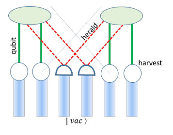
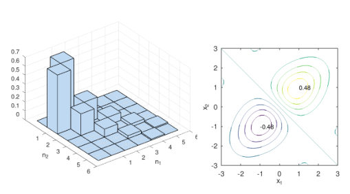
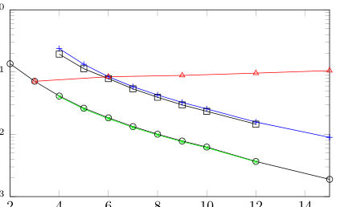
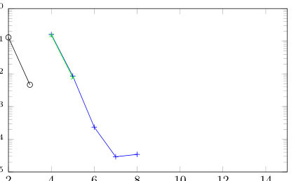
Summary. The paper demonstrates that entanglement between distant parts of a harmonic chain can be 'unlocked' by measuring and communicating the state of the intervening modes. This process allows for much higher entanglement levels than are present in the unobserved ground state, with applications ranging from trapped ions to quantum field theory.
Why it may be interesting. It provides a protocol for extracting entanglement from the vacuum using local operations and classical communication, which is highly relevant for quantum networks and harvesting entanglement in continuous-variable systems.
Main problem. Investigating how to access or 'unlock' entanglement present in the ground state of a harmonic chain that otherwise decays rapidly with distance.
Main result. Measuring central modes and communicating the results (heralding) can significantly enhance entanglement between distant outer modes, even when unobserved entanglement is nearly zero.
Method. Analytical and numerical analysis of a harmonic chain using entanglement measures like entanglement of formation, von Neumann entropy, and harvested entanglement via local swap operations.
Model / system. A discretized harmonic chain of N interacting oscillators, which serves as a model for trapped ions, molecular vibrations, and the vacuum state of a bosonic quantum field.
Key observables. Entanglement of formation (E), harvested entanglement (Ev), heralded entanglement (E-bar), and entanglement entropy.
Important parameters / regimes. Chain length (N), squeezing parameter (beta), phase (theta), and local mode frequencies.
Assumptions / limitations. The outer observers must be timelike-separated from the herald to receive classical communication; numerical simulations were limited to N=15.
Figures summary. Fig 1 shows a spacetime diagram of the harvesting and communication process; Fig 2 visualizes a specific two-mode squeezed state; Fig 3 shows the decay of unobserved entanglement with chain length; Fig 4 shows the enhancement of heralded entanglement.
Paper structure. The paper introduces the problem of entanglement decay in harmonic chains, identifies a specific class of squeezed states, demonstrates the 'unlocking' mechanism through central mode measurement, and extends the findings to the continuous quantum field limit.
The structure of entanglement in the ground state of the harmonic chain is studied. A class of two-mode squeezed states, useful for this purpose, is identified. The entanglement of the local modes at the ends of the chain, after tracing out the centre, rapidly falls to zero as the length of the chain increases. However, if the central modes are measured, and the result communicated to systems interacting with the outer modes, the latter exhibit greatly enhanced entanglement, including in conditions where none was otherwise available. These ideas can be demonstrated in experiments in trapped ions, among other systems. The extension to the continuous case yields enhanced entanglement extracted from the vacuum state of a bosonic quantum field.
Authors: S. Kürkcüoğlu, B. Özcan
Type: theory · Category: statistical mechanics · PDF: https://arxiv.org/pdf/2605.06985v1
Analysis basis: full PDF text, analyzed in chunks
Topic relevance: 🔥 entanglement & information structure 4/5 · Keldysh / 2PI / non-Gaussian methods 3/5 · non-equilibrium dynamics 3/5
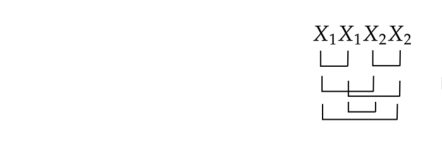
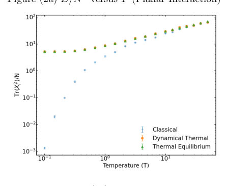
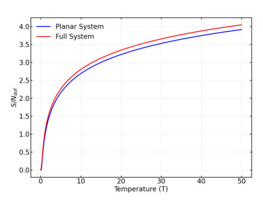
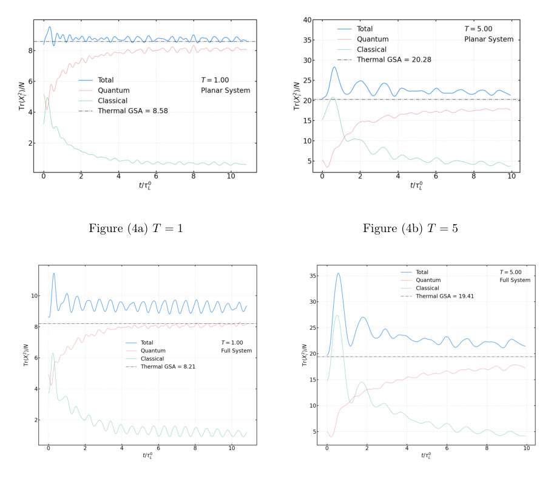
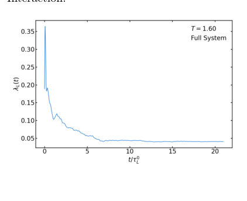
Summary. The paper studies how quantum information scrambles and how chaos emerges in a matrix model on a fuzzy sphere. It demonstrates that quantum fluctuations suppress chaos at low temperatures and that the system obeys the fundamental MSS bound on chaos. The results provide insight into the transition from quantum to classical chaotic regimes.
Why it may be interesting. This paper is highly relevant for many-body dynamics as it explores the fundamental limits of quantum chaos (the MSS bound) and the mechanism of information scrambling in a non-commutative geometric framework.
Main problem. Investigating real-time quantum dynamics, chaos, and entanglement evolution in a matrix model on a fuzzy sphere, specifically testing the MSS bound and observing the transition between quantum and classical chaotic regimes.
Main result. The system respects the Maldacena-Shenker-Stanford (MSS) bound across all temperatures, with the largest Lyapunov exponent vanishing at a finite critical temperature. Additionally, the system exhibits fast scrambling features in its entanglement dynamics.
Method. The study employs the Gaussian State Approximation (GSA) and Wick's theorem to derive closed nonlinear differential equations for correlation functions, using a maximum entropy principle to determine the thermal equation of state.
Model / system. A two-matrix bosonic model on a fuzzy sphere (S2_F x R) involving N x N Hermitian matrices for position and momentum, featuring both planar and non-planar interaction potentials.
Key observables. Largest Lyapunov exponent (lambda_L), entanglement entropy (S_<=L), entanglement saturation rate (lambda_E), energy (E), and temperature (T).
Important parameters / regimes. Matrix size (N), radius of the fuzzy sphere (R), mass (mu), coupling constant (lambda), and temperature (T).
Assumptions / limitations. The dynamics are studied within the Gaussian State Approximation (GSA), which captures essential quantum features but does not preserve supersymmetry or capture the full non-Gaussian dynamics.
Figures summary. Plots showing energy and dispersion versus temperature, the dependence of the Lyapunov exponent on temperature and sphere radius, and the time evolution of entanglement entropy showing fast scrambling.
Paper structure. The paper begins with the Hamiltonian formulation and algebraic foundation of the fuzzy sphere, moves to the derivation of the thermal equation of state via maximum entropy, describes the numerical integration of the equations of motion, and concludes with the analysis of chaos and entanglement dynamics.
We study the real time quantum dynamics of a matrix model consisting two bosonic fields on the fuzzy sphere using the Gaussian state approximation. Starting from the Hamiltonian formulation and using Wick's theorem, we derive a closed set of coupled nonlinear differential equations governing the time evolution of the one- and two-point correlation functions. Thermal equation of state is found by maximizing the von Neumann entropy over Gaussian states and solving algebraic self-consistency equation(s) leading to a complete determination of the symplectic spectrum of the covariance matrix. We identify near thermal initial conditions and use them to solve the equations of motion and employ our findings to probe chaos by calculating the largest Lyapunov exponent at various temperatures. Our results demonstrate that the latter tends to zero at a finite temperature indicating that the quantum dynamics respect the Maldacena,Shenker,Stanford bound across all temperatures, while approaching toward the classically chaotic regime at high temperatures. Finally, we examine the entanglement dynamics of the model in real-time by considering a sequence of bipartitions of the Hilbert space and computing the entanglement entropy and clearly exhibit the fast scrambling features that emerge in due detail.
Authors: Kapil Goswami, Peter Schmelcher
Type: theory · Category: quantum information and computing · PDF: https://arxiv.org/pdf/2605.07627v1
Analysis basis: abstract only; PDF text extraction failed or PDF unavailable
Topic relevance: 🔥 Rydberg arrays 4/5 · analog quantum simulation 3/5 · exotic spin models in light-matter 2/5
Summary. This paper proposes a unified encoding scheme to solve various NP-hard optimization problems using a Rydberg-based quantum annealer. By leveraging local light-shifts and long-range interactions, the framework improves scalability and introduces a new parameter to quantify the difficulty of different optimization landscapes.
Why it may be interesting. It is highly relevant for researchers in AMO and quantum computing as it provides a scalable method for using Rydberg atom arrays as programmable quantum annealers for complex combinatorial tasks.
Main problem. The paper addresses the challenge of mapping various NP-hard combinatorial optimization problems, expressed in QUBO formalism, onto a Rydberg-based quantum annealing platform.
Main result. The authors present a unified framework for encoding diverse problems (such as SAT variants, set packing, and protein folding) onto Rydberg atoms using local light-shifts, and introduce a generalized hardness parameter to quantify optimization landscape complexity.
Method. The method involves a direct mapping of QUBO problems to Rydberg systems using distance-dependent long-range interactions and configurable local detuning, followed by an optimized quantum annealing protocol that controls time-dependent detuning and Rabi frequency profiles.
Model / system. The physical platform is a Rydberg quantum annealer utilizing Rydberg atoms with long-range, distance-dependent interactions and controllable local detuning (light-shifts).
Key observables. The ground state of the target Hamiltonian and a generalized hardness parameter based on the optimization landscape.
Important parameters / regimes. Time-dependent detuning, Rabi frequency profiles, and distance-dependent long-range interactions.
Assumptions / limitations. The framework assumes the ability to implement configurable local detuning and precise control over the annealing protocol parameters.
Paper structure. The paper introduces a unified framework for QUBO problems, demonstrates the mapping to Rydberg platforms, describes the annealing protocol, and concludes with a new metric for problem complexity.
Combinatorial optimization problems play a central role in computer science with many real world applications. A number of relevant problems remain computationally difficult to solve as they lie in the NP-hard complexity class. We present a unified framework for solving such optimization problems represented in the quadratic unconstrained binary optimization (QUBO) formalism, namely two-SAT, XOR-SAT, mixed-two-XOR-SAT, set packing, quadratic assignment, binary clustering, and protein folding, by expanding the domain of applications of \textit{PRR, 6(2), 023031}. A direct mapping from the QUBO form of these problems onto the Rydberg quantum platform is demonstrated as our first step. This mapping to the Rydberg system depends on distance-dependent long-range interactions and configurable local detuning, thus reducing resource overhead and improving scalability. Following-up on the encoding, the solution is reached by steering the system toward the ground state of the target Hamiltonian using an optimized quantum annealing protocol that controls the time-dependent detuning and Rabi frequency profiles. The framework can handle a variety of problems, each with different complexity. To quantify the complexity of any problem, a generalized hardness parameter is introduced that compares different problems based on the structure of their optimization landscapes. This is a proceedings contribution to the Athens Workshop in Theoretical Physics: 10th Anniversary, held at the National and Kapodistrian University of Athens on December 17-19 2025.
Authors: Jian-Song Zhang, Yuan Chen, Guang-Ling Cheng, Ai-Xi Chen
Type: theory · Category: other · PDF: https://arxiv.org/pdf/2605.07371v1
Analysis basis: full PDF text, analyzed in chunks
Topic relevance: 🔥 correlated / nonlocal dissipation 4/5 · entanglement & information structure 3/5 · non-equilibrium dynamics 2/5
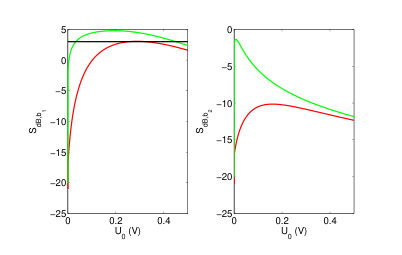
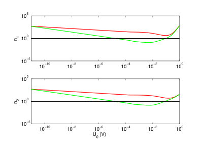
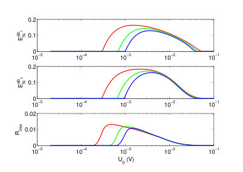
Summary. This paper proposes using Coulomb interaction to break the mechanical dark mode in optomechanical systems. This allows for efficient ground-state cooling and the creation of robust mechanical squeezing and tripartite entanglement even in the difficult unresolved sideband regime.
Why it may be interesting. It provides a novel mechanism (Coulomb interaction) to engineer quantum states and break decoherence-like effects (dark modes) in multi-mode optomechanical systems, which is highly relevant to quantum reservoir engineering and continuous-variable quantum information.
Main problem. The paper addresses the 'dark-mode effect' in optomechanical systems with two degenerate mechanical resonators, which prevents efficient ground-state cooling and entanglement generation, especially in the unresolved sideband regime.
Main result. By using Coulomb interaction and an optical parametric amplifier, the researchers demonstrate a method to break the dark mode, enabling simultaneous ground-state cooling, mechanical squeezing beyond 3 dB, and the generation of bipartite and genuine tripartite entanglement.
Method. The study uses a linearized quantum Langevin equation approach, stability analysis via the Routh-Hurwitz criterion, and numerical simulations of the $6 imes 6$ covariance matrix.
Model / system. The system consists of two degenerate mechanical resonators (one charged, one neutral) coupled to an optical cavity containing an optical parametric amplifier (OPA), with an additional Coulomb interaction controlled by a bias gate voltage.
Key observables. Steady-state mean phonon numbers, mechanical squeezing (in dB), bipartite entanglement (logarithmic negativity), and genuine tripartite entanglement (minimum residual contangle).
Important parameters / regimes. Unresolved sideband regime ($\kappa > \omega_m$), bias gate voltage ($U_0$), Coulomb interaction strength, and high initial thermal phonon numbers ($n_{th} = 1000$).
Assumptions / limitations. The analysis utilizes the Rotating Wave Approximation (RWA) and assumes a linearized regime for the optomechanical interaction.
Figures summary. Figure 1 plots steady-state mean phonon numbers for both resonators against the bias gate voltage, showing an optimal voltage for cooling.
Paper structure. The paper introduces the dark-mode problem, describes the physical system and Hamiltonian, details the mathematical linearization and stability methods, presents numerical results regarding cooling, squeezing, and entanglement, and concludes with the implications of the Coulomb interaction.
We propose a method to break the dark mode of two degenerate mechanical resonators (MRs) in optomechanical systems via the Coulomb interaction. Two degenerate MRs can be cooled to their ground-state simultaneously beyond the resolved sideband regime using the Coulomb interaction and an optical parametric amplifier (OPA). We show that strong and robust mechanical squeezing beyond 3 dB can be generated using the OPA and mechanical parametric amplification (MPA) introduced by the Coulomb interaction. Our results manifests that robust bipartite and genuine tripartite entanglement can be produced in a degenerate optomechanical system.
Authors: Bruno Carvalho, Jonas F. G. Santos, Moises Rojas
Type: theory · Category: statistical mechanics · PDF: https://arxiv.org/pdf/2605.07124v1
Analysis basis: abstract only; PDF text extraction failed or PDF unavailable
Topic relevance: 🔥 quantum measurements 4/5 · non-equilibrium dynamics 3/5 · methods for driven-dissipative 2/5
Summary. This paper explores how generalized measurements can power thermal machines using a double quantum dot. It demonstrates that interdot tunneling allows for new refrigeration modes and provides a way to optimize heat-to-work conversion. The findings highlight the potential of quantum dots for implementing measurement-assisted thermodynamic devices.
Why it may be interesting. It provides new insights into how coherent coupling and non-diagonal elements in quantum systems can be leveraged as a resource for measurement-driven quantum thermodynamics.
Main problem. Investigating the thermodynamic performance of quantum thermal machines driven by sequential nonselective generalized measurements.
Main result. The study shows that coherent interdot tunneling enables new refrigeration configurations absent in purely detuned models and acts as a resource for optimizing work extraction and cooling.
Method. The authors formulate a three-stroke thermodynamic cycle consisting of thermalization with a single reservoir and two generalized measurement channels, analyzing internal energy and entropy variations.
Model / system. A double quantum dot with coherent interdot tunneling serving as the working substance, where the competition between detuning and tunneling hybridizes the localized states.
Key observables. Internal-energy variations, entropy variations, and operational modes (heat engine, accelerator, heater, or refrigerator).
Important parameters / regimes. Temperature, detuning, tunneling amplitude, and measurement parameters.
Assumptions / limitations. The machine operates via sequential nonselective generalized measurements and a three-stroke cycle involving a single reservoir.
Paper structure. The paper introduces the double quantum dot model, formulates the three-stroke measurement-driven cycle, derives thermodynamic quantities, and analyzes the resulting operational regimes and performance maps.
We investigated quantum thermal machines powered by sequential nonselective generalized measurements, taking a double quantum dot with coherent interdot tunneling as a working substance. In this platform, the competition between detuning and tunneling hybridizes the localized states and modifies the energetic response of the cycle, allowing us to analyze measurement-driven thermodynamics beyond simple diagonal qubit models. We formulate a three-stroke cycle composed of thermalization with a single reservoir and two generalized measurement channels, and derive the corresponding internal-energy and entropy variations in order to identify the operational regimes of the device. Depending on the measurement parameters, the system can operate as a heat engine, accelerator, heater, or refrigerator. We show that the introduction of tunneling not only reshapes the boundaries between these modes, but also generates refrigeration configurations that are absent in the purely detuned model. In addition, the performance maps reveal that temperature, detuning, and tunneling amplitude jointly control the most favorable regions for work extraction and cooling. Our results demonstrate that coherent interdot coupling acts as an important resource for optimizing measurement-powered quantum thermal machines and highlight double quantum dots as a promising setting for experimentally relevant implementations of measurement-assisted thermodynamic devices.